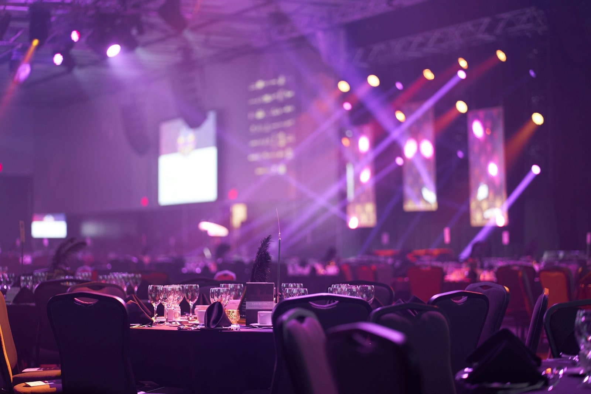

The holiday party
Little Moses Jones
LUXlife Wedding Band of the Year, Colorado
BOOK LIVE MUSIC IN COLORADO
Corporate events
. . .The one where everyone actually danced, and few who usually leave after dinner were still hanging all the way to the end. That party is a bookable thing, and it comes down to how sensitive the entertainment is to the flow of the evening.
Signet Artists is a Denver corporate entertainment company: bands, small ensembles, DJs and even live band karaoke. An excellent choice for office holiday parties, galas and award nights, client dinners, mountain retreats and after-parties. Our musicians have done this for Amazon, NBCUniversal, Charles Schwab and the Denver Art Museum, just to name a few.
Trusted and booked by
“[He] naturally read the vibe and flow of the crowd, adjusting intensity and volume of the performance accordingly. He checked in during the event to ensure he was delivering what was asked for, but there was no direction needed.”
You also get sound support and a personal point of contact for the night, spec'd in every booking.
The holiday party
LUXlife Wedding Band of the Year, Colorado

The client dinner

The gala

Welcome drinks

The after-party

A themed association event
Headlined Dazzle
“Their combination of upright bass and guitar brought an effortless sophistication and warmth to the evening. Their musicianship was truly outstanding. Elegant and refined. They have a remarkable ability to enhance the atmosphere without overpowering it...”
Common types of corporate occasions
Video Clips
A few of our acts, live.

Every great corporate evening runs on great programming.
Dinner and networking get live music low enough for everyone to talk, and the night can get loud later, when loud is exactly the point.
The music stops while your CEO is still three steps from the microphone.
At a client dinner, people came to talk to each other, and they do most of it at the table.
In 2024, researchers timed 282 tables at a restaurant in Tel Aviv while they changed the tempo of the background music. Guests stayed about 80 minutes when the songs were slow and about 57 when they were fast.
Researchers who pooled 32 studies in 2006 found that people respond more to music they know and like. That's why we ask who's coming before we pick the act.
Part of what makes a great party is being able to tell its story once it's over.
We can add a photographer and a videographer to your booking, so that one party is still there to watch years from now. It's a way to remember something that brought your whole company together, and over time it becomes part of your company's history and culture.
Choose from four packages: Event Photos, Highlight Film, Photos and Film, and Culture Film. Learn more about event photos and video.

We create the evening to meet the expectations of a group that flew in for it.
“Hired this musician for our office happy hour and it was a great call good music, easy vibe, and it made the whole event more fun.”
Have a different question? Check out our planners question list for volume limits and more, and the Backup Promise for what happens if a musician can't make it. Bringing people in from out of state? We wrote about how to make a corporate event sound like Colorado.
We’d love to help you find the right live entertainment, whatever the size of your event.